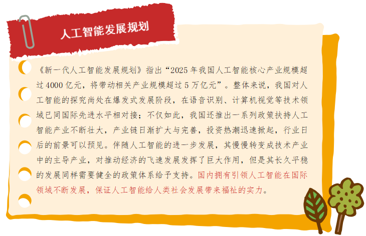

任务二 我国人工智能的发展之路
【任务描述】
与国际上人工智能的发展情况相比，我国人工智能研究不仅起步较晚，而且发展道路曲折坎坷，历经了质疑、批评甚至打压的十分艰难的发展历程，但是改革开放之后，我国人工智能开启了快速发展之路。我国人工智能经历了科研起步和产业快速发展，现在已经进入国家战略规范发展阶段。
【任务实施】
2.1 科研起步阶段
1978年3月，邓小平发表了“科学技术是生产力”的重要讲话，提出“向科学技术现代化进军”的战略决策，打开解放思想的先河，促进中国科学事业的发展，使中国科技事业迎来了科学的春天。广大科技人员出现了思想大解放，人工智能也在酝酿着进一步的解禁。吴文俊凭借几何定理的机器证明成果，获得1978年全国科学大会重大科技成果奖，成为国际自动推理界的领军人物，他所开创的数学机械化也在国际上被誉为"吴方法。
20世纪70年代末至80年代前期，一些人工智能相关项目已被纳入国家科研计划。例如，在1978年召开的中国自动化学会年会上，报告了光学文字识别系统、手写体数字识别、生物控制论和模糊集合等研究成果，表明中国人工智能在生物控制和模式识别等方向的研究已开始起步。1986年起把智能计算机系统、智能机器人和智能信息处理等重大项目列入国家高技术研究发展计划(863计划)。人工智能研究已经成为国家重点支持的科研领域。
2.2 产业快速发展阶段
2003年西安电子科技大学雷达信号处理国家重点实验室和北京大学智能科学系共同提出成立智能科学与技术专业，智能科学与技术面向前沿高新技术的基础性本科专业，覆盖面很广。专业涉及机器人技术，以新一代网络计算为基础的智能系统，微机电系统（MEMS），与国民经济、工业生产及日常生活密切相关的各类智能技术与系统，新一代的人－机系统技术等。全国共有36所本科院校开设智能科学与技术专业的人才培养，为我国人工智能从科研实验进入产业应用提供了源源不断的智力支持，开始进入快速发展期。浪潮天梭在 2006 年8月以3胜5平2负击败柳大华等5位中国象棋大师组成的联盟。科大讯飞语音识别技术已经处于国际领先地位，其语音识别和理解的准确率均达到了世界第一，自 2006年首次参加国际权威的 BlizzardChallenge大赛以来，一直保持冠军地位。百度推出了度秘和自动驾驶汽车。腾讯推出了机器人记者 Dreamwriter 和图像识别产品腾讯优图。阿里巴巴推出了人工智能平台 DTPAI和机器人客服平台。清华大学研发成功的人脸识别系统以及智能问答技术都已经获得了应用。中科院自动化所研发成功了"寒武纪"芯片并建成了类脑智能研究平台。华为也推出了MoKA人工智能系统。
2.3 国家战略规划发展阶段
世界各国已经认识到人工智能是未来国家之间竞争的关键赛场，因而纷纷开始部署人工智能发展战略，以期占领新一轮科技革命的历史高点，我国也不例外。2017年3月，"人工智能"首次被写入政府工作报告。 2017年7月，国务院发布《新一代人工智能发展规划》。2017年10月，人工智能被写入十九大报告。 2018年3月，人工智能再度被写入政府工作报告。2018年12月的中央经济工作会议上，人工智能被列入“新基建”的核心板块。2019年3月，人工智能第三次出现在政府工作报告中，并升级为"人工智能+"。2020年3月，中共中央政治局常务委员会召开会议，提出要发力于科技端的基础设施建设，人工智能再次成为“新基建”七大版块中的重要一项。
新技术推动学科建设和催生新职业。2018年4月，教育部在研究制定《高等学校引领人工智能创新行动计划》确定设立人工智能专业，进一步完善中国高校人工智能学科体系，旨在培养中国人工智能产业的应用型人才，推动人工智能一级学科建设。2019年3月，全国共有35所高校获首批「人工智能」新专业建设资格。教育部确定2019年度增补人工智能技术服务专业，自2020年起执行，首批共有171所高职院校获批新专业人才培养资格。2019年4月，中华人民共和国人力资源保障部（以下简称人社部）等部门发布13个新职业，包括人工智能工程技术人员等。2020年2月，人社部再次向社会发布了未来紧需的16个新职业，人工智能训练师、智能制造工程技术人员等名列其中。

【任务拓展】
在人工智能领域，无论是从理论研究、技术研发方面，还是从产业基础方面来看，应该说我国的研究积累与发达国家相比差距不大，目前很多方面已经处于世界领先水平。你了解本地区的人工智能发展规划和政策吗？国家有关人工智能的发展战略规划和本地区的人工智能政策，结合自己的专业查阅行业资料，思考自己未来的就业规划，你计划从事的行业未来需要人工智能训练师吗？